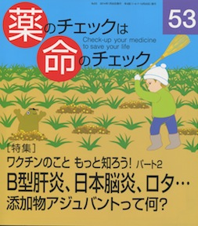

No.53 [特集] ワクチンのこともっと知ろう！ パート２ 2014年1月 発行
B型肝炎、日本脳炎、ロタ・・・
添加物アジュバントって何？

今回もワクチンがテーマです。
取り上げたのは、
定期接種の日本脳炎ワクチンとB型肝炎ワクチン
任意接種として新たに登場したロタウイルスワクチン
さらに、任意から定期接種になり積極的勧奨だったのが
接種後の害が出て「積極的勧奨」がいったん差し控えられた
HPV ワクチン（通称、子宮頸がん予防ワクチン）のその後、です。
そして、近年、ワクチンへの添加が当たり前のようになってきた
アジュバントという添加物についても、検討しました。
※54号でもワクチンを取り上げる予定です。
もくじ
Main Feature 特集 ワクチン Part2
特集にあたって
ワクチン（予防接種）なぜうつの？ 編集部
感染症の話に出ることば辞典
日本脳炎ー何のための予防接種？ 入江紀夫
ロタウイルスワクチンを考えよう 谷田憲俊
Ｂ型肝炎ワクチンを再考する 浜 六郎
アジュバントの正体と
HPV ワクチンを徹底解剖する 浜 六郎
第1章 アジュバント その魔力は薬か毒か
第2章 とくにHPVワクチンのアジュバントについて
第3章 アジュバント病
第4章 抗リン脂質抗体症候群も？
HPV ワクチンの積極的勧奨中止以降の動き 隈本邦彦
トピック
メディアの責任は？ バルサルタンデータ捏造 木元康介
災害を防ぐこと、薬害を防ぐこと
Series 連載
■ 医師国家試験に挑戦しよう！⑲ 木元康介
■ コーヒー無礼区 夢 坂口啓子
■ リレーエッセイ 生国魂神社 山添仁志
■ みんなのやさしい生命倫理(53) 生老病死(23) 谷田憲俊
■ 医師国家試験の解答と解説
Others
質問箱番外編 スーパー糖質制限食を実践した！
糖質制限食は人にとって本来のあり方だ（大櫛陽一）
「やや太めが長生き」と糖質制限食について（浜六郎）
読者の声
書評
バックナンバー一覧 / 書籍申込用紙
編集後記/奥付